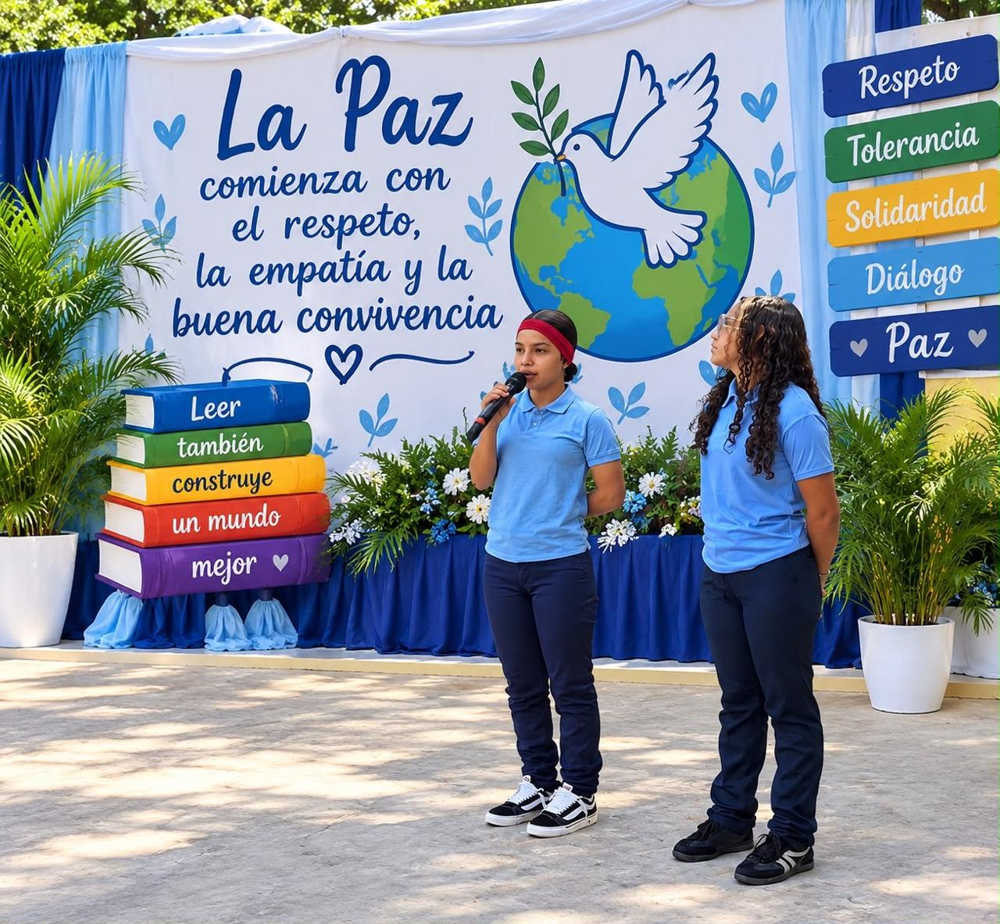
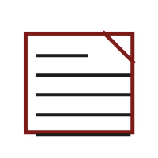
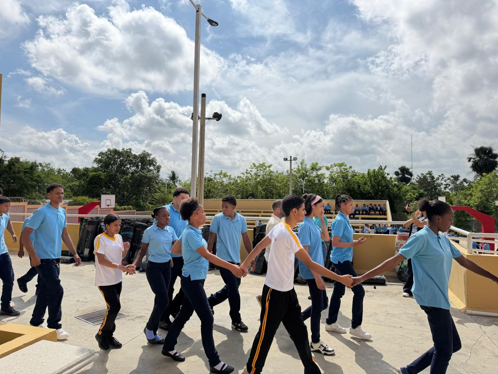
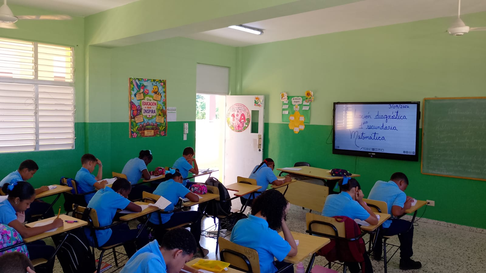
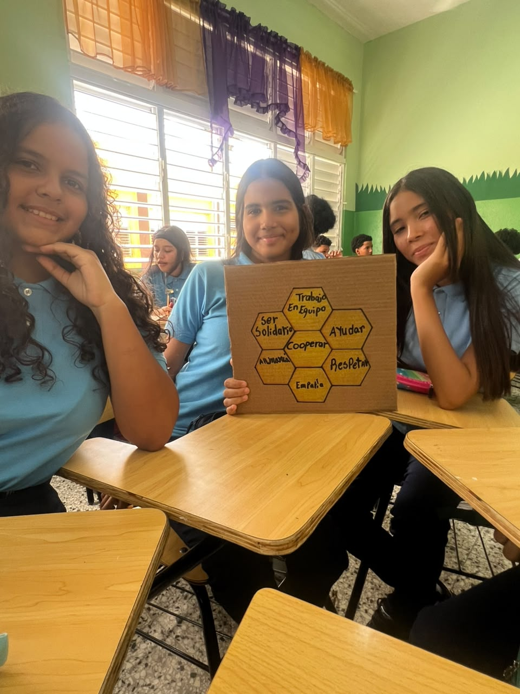
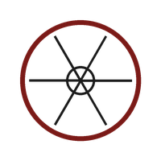
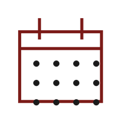

EfemérideDía Internacional de la Paz
La paz no se aprende en un acto de un día, sino en la convivencia diaria. Estudiantes asumieron un pacto por la paz desde la escuela: el reto es que no se quede en la pancarta.
"Informando, educando e inspirando a nuestra comunidad"
Centro Educativo Francisco Antonio Castillo Salcedo
Con gran entusiasmo el Centro Educativo Francisco Antonio Castillo Salcedo recibió a toda su comunidad educativa para dar inicio al año escolar 2026-2027, bajo el lema "Construimos juntos un ambiente de empatía para convivir en armonía". El personal docente y administrativo compartió una jornada de bienvenida llena de color, alegría y compromiso renovado con la educación.
En esta primera edición presentamos las novedades del inicio de clases, la semana de ambientación, la evaluación diagnóstica, el simulacro nacional y la celebración del Día de la Alfabetización.

Noticias Escolares
EfemérideLa paz no se aprende en un acto de un día, sino en la convivencia diaria. Estudiantes asumieron un pacto por la paz desde la escuela: el reto es que no se quede en la pancarta.
 Efeméride
Efeméride
Estudiantes conmemoraron el 8 de septiembre con un acto especial bajo el lema "Cada palabra aprendida es un paso hacia un futuro mejor", resaltando la importancia de la lectura y la escritura.

Seguridad EscolarLa comunidad educativa participó activamente en el simulacro nacional, reforzando los protocolos de seguridad y las rutas de evacuación del plantel.

AcadémicoLos estudiantes de todos los niveles realizaron las pruebas diagnósticas correspondientes, permitiendo al equipo docente identificar fortalezas y áreas de refuerzo para el año.

ComunidadEstudiantes y docentes participaron en dinámicas de integración y valores como el trabajo en equipo, la solidaridad y el respeto, preparando el ambiente de aula para el nuevo año.
El centro educativo dio la bienvenida a la comunidad escolar con una jornada especial de apertura, marcando el comienzo de un nuevo período lleno de metas y proyectos.

Deportes
Calendario de EventosLos días subrayados tienen actividades según el Calendario Escolar 2026-2027 del MINERD.